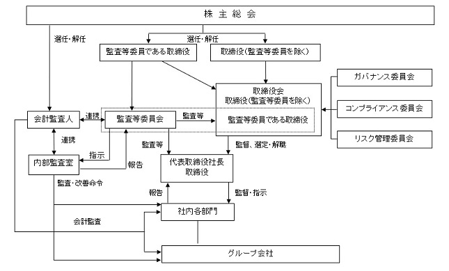

該当事項はありません。
該当事項はありません。
③ 【その他の新株予約権等の状況】
当社は、会社法に基づき新株予約権を発行しております。
※ 本新株予約権は、2025年３月18日及び2025年３月21日に全ての行使が完了いたしました。
(注) １．新株予約権１個につき目的となる株式数は、100株であります。
ただし、新株予約権の割当日後、当社が株式分割、株式併合を行う場合は、次の算式により付与株式数を調整し、調整の結果生じる１株未満の端数は、これを切り捨てる。
２．新株予約権の割当日後、当社が株式分割、株式併合を行う場合は、次の算式により払込金額を調整し、調整により生ずる１円未満の端数は切り上げる。
また、新株予約権の割当日後に時価を下回る価額で新株式の発行または自己株式の処分を行う場合は、次の算式により払込金額を調整し、調整により生ずる１円未満の端数は切り上げる。
該当事項はありません。
(注) １ 株式会社フェニックス・エンターテイメント・ツアーズとの株式交換（交換比率１：87）による増加であります。
(注) ２ ＭＡＧパートナーズ株式会社との株式交換（交換比率１：81,000）による増加であります。
(注) ３ 新株予約権の行使による増加であります。
(注) １ 自己株式株8,399株については、「個人その他」に83単元、「単元未満株式の状況」に99株を含めて記載しております。
２ 「その他の法人」の欄には、株式会社証券保管振替機構名義の株式３単元が含まれております。
2025年３月31日現在
(注) １ 所有株式数は、百株未満を切り捨てて表示しております。
２ 代表取締役社長である福村康廣氏の所有株式数については、「株式会社山田エスクロー信託 信託口」名義の株式数を合算しています。これは、福村康廣氏が保有する当社株式を信託設定したもので、議決権については、福村康廣氏が指図権を留保しております。
なお、合算した「株式会社山田エスクロー信託 信託口」名義の株式は、29,500百株です。
３ 2024年10月17日に当社を株式交換完全親会社、株式会社フェニックス・エンターテイメント・ツアーズを株式交換完全子会社とする株式交換を実施したため、株式会社コンステレーションズが新たに主要株主となっております。
４ 2024年10月17日に当社を株式交換完全親会社、ＭＡＧパートナーズ株式会社を株式交換完全子会社とする株式交換を実施したため、山口豊彦氏が新たに主要株主となっております。
(注) １ 上記「単元未満株式」欄の普通株式には、当社保有の自己株式99株が含まれております。
２ 「完全議決権株式(その他)」欄には、株式会社証券保管振替機構名義の株式300株が含まれております。
また、「議決権の数」欄には、同機構名義の完全議決権株式に係る議決権の数３個が含まれております。
該当事項はありません。
該当事項はありません。
該当事項はありません。
(注) 当期間における取得自己株式には、2025年６月１日から有価証券報告書提出日までの単元未満株式の買取りによる株式は含まれておりません。
当社グループは、安定した収益力の維持と更なる成長によって、企業価値の向上を図り、配当などを通して株主の皆様の期待に応えることを基本方針としております。
当社は、中間配当と期末配当の年２回の剰余金の配当を行うことを基本方針としており、剰余金の配当の決定機関は、期末配当については株主総会、中間配当については、「取締役会の決議により、毎年９月30日を基準日として、中間配当を行うことができる。」旨を定款に定めております。
一方で、投資事業等によって得られた収益を再投資することにより、収益の拡大に寄与することが、企業価値向上につながります。よって、新たな投資や事業開発等に備えるため、内部留保の充実を図ることも重要であると考えております。
なお、基準日が当事業年度に属する剰余金の配当につきましては、誠に遺憾ながら期末配当を見送ることとさせていただきます。
当社の基本方針は健全な企業活動の遂行であり、コンプライアンスを徹底することで、経営の効率性、健全性及び透明性を高めることに努めます。これにより、あらゆるステークホルダーとの円滑な関係を構築し、企業価値の増大に努めることをコーポレート・ガバナンスの基本的な考え方としております。
当社は2016年６月24日開催の第12回定時株主総会において、監査役会設置会社から監査等委員会設置会社へ移行することが可決・承認され、業務執行に対する取締役会の監督機能強化及び社外取締役の経営参画によるプロセスの効率性、健全性及び透明性の向上によりあらゆるステークホルダーの期待に応えるため、さらなるガバナンスの強化を図る体制としております。
当社はコーポレート・ガバナンスのさらなる強化を図るための取り組みとして、取締役会の任意の諮問機関である「ガバナンス委員会」を設置するなど、内部統制と経営監督体制の整備・強化にも注力しております。
また、当社は2025年３月27日付適時開示「特別注意銘柄の指定及び上場契約違約金の徴求に関するお知らせ」にて開示のとおり、東京証券取引所から、「業務の適正を確保するために必要な体制が適切に構築・運用されておらず、企業行動規範の遵守すべき事項（業務の適正を確保するために必要な体制整備）の規定に違反したと認められ、かつ、同社の内部管理体制等について改善の必要性が高いと認められる」ことから、2025年３月27日付で当社株式は特別注意銘柄に指定されております。
一方で、当社は、2024年11月18日付適時開示「ガバナンス委員会の答申書受領のお知らせ」にて公表したとおり、ガバナンス委員会による調査報告書において、調査対象である事案の事実関係及び発生原因についての報告並びに再発防止策の提言を受けております。これに伴い、当社は、ガバナンス委員会の調査報告書において指摘された事項及び再発防止のための提言を真摯に受け止め、2025年４月25日付「改善計画の策定方針に関するお知らせ」にて公表のとおり、 (１) 経営トップの影響力の排除・経営体制の見直し、(２) 指名報酬委員会の設置・社外役員の過半数化、（３）取締役会・監査等委員会によるガバナンス機能の強化、（４）本件を踏まえた個別的な対応、（５）企業風土の刷新に向けた役員や管理職以上の社員に対する、コーポレート・ガバナンス、コンプライアンス及びパワーハラスメント防止に関する研修の継続的な実施、（６）内部通報窓口の機能充実と周知徹底、から構成される再発防止策を策定しております。
また、2025年４月25日付適時開示「改善計画の策定方針に関するお知らせ」にて公表のとおり、特別注意銘柄に指定されたことから、上記の再発防止策の各事項が十分であるか再検討するとともに、ガバナンス・内部管理体制の整備と強化を図るべく、以下の具体的プロセス及び実施計画のもと、外部のコンサルティング会社の支援も受けながら改善計画を策定し、内部管理体制の再構築に取り組んでおります。
有価証券報告書提出日現在、当社は監査等委員会設置会社であり、監査等委員会は３名の社外取締役で構成されております。そのうち１名は公認会計士・税理士の有資格者であり、財務・会計に関する高い専門性を有しております。
監査等委員は、取締役会及びその他の重要な会議に出席するほか、必要に応じて取締役からの業務報告の聴取、重要な決裁書類の閲覧、主要事業所に対する内部監査結果の確認などを通じて、経営執行の監査を行っております。
非常勤体制を踏まえ、内部監査室等と連携しながら、実効性のある監査活動を継続しております
また、当社では内部監査室のレポートラインを監査等委員会に設けており、同委員会の監督のもとで内部監査室が監査計画の立案、監査実施、指摘事項の是正フォローアップを行っております。監査等委員会は、内部監査室から定期的に報告を受けるとともに、必要に応じて調査や指導を行い、実効的な監査活動の遂行を図っております。
さらに、監査等委員は会計監査人、内部監査室及びグループ会社の監査役との間で情報交換・連携を行い、当社及びグループ各社における監査の実効性向上に努めております。
取締役会は、取締役（監査等委員である取締役を除く）４名及び監査等委員である取締役３名で構成されており、原則として月１回の定例取締役会を開催するほか、必要に応じて臨時取締役会を開催し、迅速かつ適切な意思決定を行っております。
こうした取締役会及び監査体制の強化に加え、当社は2024年９月11日開催の取締役会において、任意の諮問機関である「ガバナンス委員会」を新たに設置いたしました。
当該委員会は、当社と利害関係を有しない独立した外部専門家（弁護士・公認会計士）３名により構成され、委員長は委員間の互選により選任されています。制度的に取締役会に対して助言を行う体制とすることで、外部の専門的見地を取り入れたガバナンス機能の強化を図っております。
イ．役割期待
経営の信頼性回復及び統治体制の再構築に向けた助言を担います。前代表による問題行為を受けて、取締役会の監督機能が形骸化していた反省を踏まえ、外部の視点から企業統治の在り方や改善策について提言を行うことが期待されています。
ロ．機能
調査・分析・提言を通じたガバナンスの実質的な改善機関として、問題行為に関する事実調査、原因分析と再発防止策の検討、責任追及に関する提言、将来的なコーポレートアクションに関する助言等を行い、取締役会に対する助言機能を担っています。
本有価証券報告書提出日現在の、コーポレート・ガバナンス体制は次のとおりです。

イ．内部統制システムの整備の状況
ａ．当社及び子会社の取締役及び使用人の職務の執行が、法令及び定款に適合することを確保するための体制
企業としての行動基準である「エルアイイーエイチグループ企業行動基準」、「コンプライアンス基本規程」及び「コンプライアンスマニュアル」を定め、当社及び当社グループの取締役及び使用人が法令、定款及び社会倫理・企業倫理規範の遵守を前提とした職務執行を行うための行動規範としております。
コンプライアンスを統括する組織として、コンプライアンス委員会及びその運営母体として、経営企画室にコンプライアンス室を設置し、コンプライアンス体制(内部統制を含む)の整備・構築、維持・強化、並びに、当社及び当社グループへの周知徹底を図っております。
また、内部監査部門として内部監査室を設置し、「内部監査規程」に基づき、監査等委員会と連携をとりながら、当社及び当社グループの内部統制の整備・運用状況を継続的に監視しております。
ｂ．当社の取締役の職務執行に係る情報の保存及び管理に関する体制
当社の取締役の職務の執行に係る情報・文書の取扱いは、「文書管理規程」及び「情報管理規程」に従い適切に保存及び管理(廃棄を含む)し、必要に応じて運用状況の検証、各規程等の見直しを行っております。
ｃ．当社及び子会社の損失の危険の管理その他の体制
当社及び当社グループのリスクへの対応組織として、社長を委員長とするリスク管理委員会を設置し、潜在的なリスクの管理体制を構築するとともに、顕在化したリスクに対しては、迅速かつ的確な対応を行うことで、損害等の拡大を防止するために、「Ⅶ−２危機管理規程」に基づき、臨時の危機管理委員会を設置しております。
ｄ．当社及び子会社の取締役の職務の執行が、効率的に行われていることを確保するための体制
当社及び当社グループの取締役の職務の執行が効率的に行われることを確保するための体制の基礎として、「取締役会規程」に基づき、月１回の定例取締役会及び適宜に臨時取締役会を開催し、重要事項に関して迅速に的確な意思決定を行っております。
また、取締役会の決定に基づく業務執行については、「組織・職務権限規程」及び「業務分掌規程」において、それぞれの責任者及びその責任、並びに執行手続きの詳細について定めております。
ｅ．当社グループにおける業務の適正を確保するための体制
グループ各社の経営管理については、「関係会社管理規程」に基づき、同規程に定める事項について適宜承認及び報告を行う体制を構築しております。
また、グループ各社にコンプライアンス担当責任者を置き、当社の経営企画室と連携をとりながら、グループ各社における内部統制の有効性を高めております。
ｆ．監査等委員会がその職務を補助すべき使用人を置くことを求めた場合における当該使用人に関する事項及び
当該使用人の取締役からの独立性に関する事項
監査等委員会が必要とした場合、監査等委員の職務を補助すべき使用人を置くものとしております。
なお、使用人の任命、異動、評価、懲戒は、監査等委員会の意見を尊重した上で行うものとし、当該使用人の取締役からの独立性を確保しております。
ｇ．監査等委員会に報告をするための体制及び報告したことを理由として不利な取り扱いを受けないことを確保するための体制
当社の取締役(監査等委員である取締役を除く。)及び使用人並びに子会社の取締役、監査役及び使用人又はこれらの者から報告を受けた者は、当社又は子会社に著しい損害を及ぼす事実が発生し、又は発生する虞を認めたとき、その他業務及び業績に影響を与える重要な事実を発見したとき、監査等委員会に都度報告及び情報提供を行うものとしております。
また、前記に関わらず、監査等委員はいつでも必要に応じて、当社の取締役(監査等委員である取締役を除く。)及び使用人並びに子会社の取締役、監査役及び使用人に対して報告を求めることができます。
監査等委員会へ報告を行った当社の取締役(監査等委員である取締役を除く。)及び使用人並びに子会社の取締役、監査役及び使用人に対し、当該報告を行ったことを理由として不利な取扱いを行うことを禁止し、その旨を周知徹底することとしております。
ｈ．監査等委員の職務の執行について生ずる費用の前払又は償還の手続その他の当該職務の執行について生ずる 費用又は債務の処理に係る方針に関する事項
監査等委員がその職務の執行について、会社法第399条の２第４項に基づく費用の前払等の請求をしたときは、当該請求に係る費用又は債務が当該監査等委員の職務の執行に必要でないと認められた場合を除き、速やかにこれに応じることとしております。
ｉ．その他監査等委員会の監査が実効的に行われることを確保するための体制
監査等委員会は、会計監査人、内部監査部門、グループ各社の監査役と情報交換に努め、連携して当社及びグループ各社の監査の実効性を確保するものとしております。
ｊ．財務報告の信頼性と適正性を確保するための体制
当社は、当社及び当社グループの財務報告の信頼性と適正性を重視するために、財務報告の作成に当たっては妥当な会計基準に準拠した「経理規程」を定め、「情報開示基本規程」及び「適時情報開示マニュアル」に則り、適正な財務情報の開示及び公明正大な企業経営を行うものとしております。
また、代表取締役は、内部統制の整備状況及び運用状況の評価を自ら行い、適切な結果報告を行うとともに、適時に不備の改善を行ってまいります。
ｋ．反社会的勢力の排除に向けた体制
当社は、社会の秩序や安全に脅威を与える反社会的勢力及び団体とは、関係を持たず、断固として対決することを企業理念及びグループ行動基準、並びにコンプライアンス基本規程に定めております。
反社会的勢力に対しては、総務部を対応部署とし、弁護士・警察等の外部専門機関と連携を図り、反社会的勢力に関する情報の収集に努め、反社会的勢力と一切の関係を遮断し、不当・不法な要求に対して毅然として排除する体制を整備しております。
ロ．リスク管理体制の整備の状況
当社及び子会社のリスク管理体制は、経営者の積極的な関与の下、当社の経営企画室がリスク管理部門として当社及び当社グループのリスクの認識及び評価を行っており、また、リスクの種類に応じた対処方法の明確化と周知徹底を図っております。特に、法令等の遵守については、当社のコンプライアンス室が評価及び対策を行ってまいります。
なお、当社は社長をリスク管理責任者とし、取締役で構成するリスク管理委員会を設置し、迅速かつ的確な対応を行うことで損害拡大を防止する体制を強化してまいります。
当事業年度において当社は取締役会を毎月開催しており、個々の取締役会の出席状況については次のとおりであります。
（注１）福村康廣氏については、2024年12月20日に取締役を解任となりましたので、在任時に開催された取締役会の出席状況を記載しております。
（注２）下岡寛氏及び浪川裕良氏については、就任後に開催された取締役会の出席状況を記載しております。
取締役会における具体的な検討内容として、月次決算報告に基づいた営業活動状況や設備投資、子会社への貸付などがあります。
⑤責任限定契約の内容の概要
当社は、会社法第427条第１項の規定により、取締役(業務執行取締役等であるものを除く)及び会計監査人との間に任務を怠ったことによる損害賠償責任を限定する契約を締結しております。
また、取締役(業務執行取締役等であるものを除く)及び会計監査人との間の当該契約に基づく責任の限度額は、同法第425条第１項に定める最低責任限度額としております。
当社は、当社及び全ての当社子会社におけるすべての取締役及び監査役、並びにこれらに準ずる者を被保険者
とした、改正会社法第430条の３に規定する役員等賠責責任保険契約を保険会社との間で締結しております。
当該契約の内容の概要は、以下のとおりです。
・法律上の損害賠償金及び争訟費用に限り補填の対象としております。
・被保険者の職務の執行の適正性が損なわれないようにするための措置として、被保険者による犯罪行為等に起
因する損害等については、補填の対象外としております。
・当該契約の保険料は全額当社が負担しております。
⑦自己の株式の取得
当社は、会社法第165条第２項の規定により、取締役会の決議をもって、自己の株式を取得することができる旨を定款に定めております。これは、経営環境の変化に対応した機動的な資本政策の遂行を可能とするため、市場取引等により自己の株式を取得することを目的とするものであります。
当社は、会社法第309条第２項に定める株主総会の特別決議要件について、議決権を行使することができる株主の議決権の３分の１以上を有する株主が出席し、その議決権の３分の２以上をもって行う旨定款に定めております。これは、株主総会における特別決議の定足数を緩和することにより、株主総会の円滑な運営を行うことを目的とするものであります。
当社の取締役は12名以内、うち監査等委員である取締役は５名以内とする旨を定款に定めております。
当社の取締役選任決議は、議決権を行使することができる株主の議決権の３分の１以上を有する株主が出席し、その議決権の過半数をもって行い、かつ累積投票によらないものとする旨を定款に定めております。
当社は、会社法第426条第１項の規定により、取締役会の決議をもって同法第423条第１項の行為に関する取締役(取締役であった者を含む)の責任を法令の限度において免除することができる旨定款に定めております。これは、取締役が職務を遂行するにあたり、その能力を十分に発揮して、期待される役割を果たしうる環境を整備することを目的とするものであります。
なお、2016年６月24日開催の第12回定時株主総会において、当社が監査等委員会設置会社へ移行するための定款の変更により、監査役の責任免除については、当該株主総会終結前の行為についての責任を除き、責任免除の規定を廃止しております。
当社は、会社法第454条第５項の規定により、取締役会の決議によって毎年９月30日を基準日として、中間配当を行うことができる旨定款に定めております。これは、株主への機動的な利益還元を可能にするためであります。
①役員一覧
男性
(注) １ 取締役 福田哲氏、染谷光俊氏、野間優佑氏及び石田沙月氏は、社外取締役であります。
２ 2025年３月期に係る定時株主総会終結の時から、2026年３月期に係る定時株主総会終結の時までであります。
３ 2025年３月期に係る定時株主総会終結の時から、2027年３月期に係る定時株主総会終結の時までであります。
４ 監査等委員会の体制は、次のとおりであります。
委員長 染谷光俊氏 委員 野間優佑氏 委員 石田沙月氏
５ 所有株式数は、提出日現在のものであります。
当社の社外取締役は４名であります。
福田哲氏は、信用金庫における融資・営業業務を皮切りに、流通業や農業分野において現場責任者としての実務経験を重ね、対人折衝、販売管理、事業運営に関する幅広い知見を活かして適切な助言をいただけるものと判断しております。
染谷光俊氏は、中学校・高等学校の教諭免許を有し、教育機関において20年以上にわたり教員及び教育指導者として勤務し、近年は認定こども園の園長や理事長を歴任する等、教育組織における運営管理、ガバナンス体制の構築・評価等に係る実務経験を活かして適切な助言をいただけるものと判断しております。
野間優佑氏は、公認会計士の資格を有し、複数の上場準備企業における監査役等の実務経験を持ち、企業の会計・ガバナンス体制に関する幅広い知見を活かして適切な助言をいただけるものと判断しております。
石田沙月氏は、社会保険労務士法人において、企業の労務管理、給与計算、社会保険手続、助成金申請といった実務に長年従事しており、労務コンプライアンス、人的資源管理、職場環境改善、ハラスメント防止といった非財務リスクに対する制度設計と現場運用の両面の経験を持ち合わせており、人事・労務分野における統治体制の構築と実効性確保に関する知見を活かして適切な助言をいただけるものと判断しております。
各社外取締役の当社株式の保有状況につきましては、「(2) 役員の状況」の「所有株式数」欄に記載のとおりであります。
当社においては、社外取締役を選任するための会社からの独立性に関する基準を満たし、かつ専門的な知見に基づく客観的かつ適切な監督又は監査といった機能及び役割が期待され、一般株主と利益相反が生じるおそれがないことを基本的な考え方として選任しております。
③ 経営の監督又は監査と内部監査、監査等委員会監査及び会計監査との相互連携並びに内部統制部門との関係
社外取締役については、取締役会等に出席し、客観的かつ公正な立場で必要に応じて助言を行うとともに、監査室監査、監査等委員会監査、会計監査及び内部統制についての報告を受け、経営の監督機能を強化してまいります。
監査等委員である社外取締役については、社内出身の監査等委員である取締役同様に、効率的かつ効果的に監査等委員会監査を行うため、会計監査人及び監査室との情報交換を含む緊密な協力関係を維持しております。
また、主に取締役会や監査等委員会に出席し、内部統制に関する助言を適宜行うことで、取締役会を通じて内部統制部門に対する監督機能を果たしております。
(3) 【監査の状況】
当社の監査等委員会の組織は、監査等委員である取締役が３名(うち３名が社外取締役)であり、その内訳は非常勤監査等委員３名であります。
監査等委員会監査は、年次の監査計画に基づき実施しております。会計監査に関しては、下記「会計監査の状況」の欄に記載のとおりです。
また、監査等委員会と会計監査人との相互連携については、情報交換会を開催し、お互いのコミュニケーションを図ることとしております。
当事業年度において当社は監査等委員会を７回開催しており、個々の監査役の出席状況については次のとおりであります。
監査等委員は、取締役会に出席し決議内容及び報告事項を監査し、必要により意見表明を行っております。
取締役会への監査等委員の出席率は福島寧夫氏については100％、岩田篤氏については100％、浪川裕良氏については就任後の出席率は100％です。
主な検討事項としては、内部統制の整備状況の確認、リスク管理状況の確認、台風等の天災における店舗設
備の被害状況の確認等です。
また、常勤の監査等委員は、社内の重要な会議へ必要に応じて出席しており、会議の内容を都度非常勤監査
等委員へ報告する事で、取締役会の決議事項や報告事項にならない事象を共有し、把握する事に努めておりま
す。
② 内部監査の状況
当社における内部監査は、監査室１名で組織されております。
監査室は、定期的及び随時必要な内部監査を実施しており、その結果は、代表取締役及び監査等委員会に報告し、被監査部署に業務改善の提言・勧告をしております。
リスク・コンプライアンス委員会に、内部統制構築専門委員会を設置し、内部統制評価を行っております。その活動における監査等委員との情報交換・連携により監査等委員の機能及び内部統制評価の機能強化を図っております。
会計監査人との関係については、監査等委員会が監査の独立性と適正性を監視しながら、監査計画（年次）及び会計監査結果（四半期レビュー・期末決算）の報告を受けるほか、適宜、会計監査人と定期的な情報交換や意見交換を行う等、緊密な相互関係をとっております。
内部監査の実効性を確保するための取組については、監査等委員会が内部監査室に対して、内部統制システムにかかわる状況とその監査結果の報告を求めており、必要に応じて内部監査室に対して調査を求める等、相互連携をとっております。
a.監査法人の名称
ＫＤＡ監査法人
b.継続監査期間
15年間
c.業務を執行した公認会計士
毛利優
濱村則久
d.監査業務に係る補助者の構成
当社の会計監査業務に係る補助者は公認会計士４名であります。
e.監査法人の選定方針と理由
当社は、会計監査人の選定及び評価に際しては、当社の業務内容に対応して効率的な監査業務を実施することができる規模を持つこと、審査体制が整備されていること、監査日数、監査期間及び具体的な監査実施要領並びに監査費用が合理的かつ妥当であること、さらに監査実績などにより総合的に判断いたします。また、日本公認会計士協会の定める「独立性に関する指針」に基づき独立性を有することを確認するとともに、必要な専門性を有することについて検証し、確認いたします。
f.監査等委員会による監査法人の評価
当社の監査等委員会は、監査法人に対して評価を行っており、同法人による会計監査は、従前から適正に行われていることを確認しております。
該当事項はありません。
該当事項はありません。
該当事項はありませんが、監査日数等を勘案したうえで決定しております。
公益社団法人日本監査役協会が公表している「会計監査人との連携に関する実務指針」（平成30年８月17日最終改正）等を参考に、取締役、社内関係部署及び会計監査人から必要な資料を入手しかつ報告を受け、会計監査人の監査計画の内容や職務執行状況、報酬見積りの算出根拠等を検討した結果、会計監査人の報酬等の額は相当であると判断しております。
(4) 【役員の報酬等】
a.取締役の個人別の報酬等の内容に係る決定方針に関する事項
当社は、取締役の個人別の報酬等の内容に係る決定方針（以下、決定方針という。）を2021年２月10日開催の当社取締役会において決議しております。
当社の決定方針の概要は、当社の取締役の報酬は固定報酬を中心に構成されており、収益に関与する度合い、業務遂行の重要度、担う役割の大きさ、責任の範囲及び度合い等勘案して決定しております。
取締役の個人別の報酬等の内容の決定に当たっては、当社及び当社グループ会社の収益実態及び取締役の個人別の業務遂行等から多角的な検討を行っているため、取締役会も決定方針に沿うものであると判断しております。
b.取締役の報酬等についての株主総会の決議に関する事項
・取締役（監査等委員である取締役を除く。）
2023年６月29日開催の定時株主総会において、報酬限度枠を年額3,000百万円以内（うち社外取締役の報酬は年額30百万円以内）と決議されております（使用人兼務取締役の使用人分給与は含まない）。当該株主総会終結時点の取締役（監査等委員である取締役を除く。）の員数は２名です。
・監査等委員である取締役
2016年６月24日開催の定時株主総会において、報酬限度枠を年額36百万円以内とすることが決議されております。
当該株主総会終結時点の監査等委員である取締役の員数は３名です。
② 当事業年度に係る個人別の報酬等の内容が当該方針に沿うものであると取締役会が判断した理由
当事業年度に係る取締役の個人別の報酬等については、上記決定方針に基づき、ガバナンス委員会に諮問し、その意見を踏まえ、取締役会において審議のうえ決定したものであり、上記決定方針に沿うものであると判断しております。
③ 役員区分ごとの報酬等の総額、報酬等の種類別の総額及び対象となる役員の員数
（注） 連結報酬等の総額が１億円以上である者に限定して記載しております。
(5) 【株式の保有状況】
当社及び当社グループが行う事業において、事業戦略上、協力関係を結ぶ必要があり、かつ、当社の既存ビジネスにおける競争力の強化と新規ビジネス領域の拡大による持続的な成長と当社の中長期的な企業価値向上に資する場合を除き、原則として他社株式を取得・保有いたしません。
②
当社及び連結子会社のうち、投資株式の貸借対照表計上額（投資株式計上額）が最も大きい会社（最大保有会社）である株式会社創育については以下のとおりであります。
ａ．保有目的が純投資目的以外の目的である投資株式
イ．保有方針及び保有の合理性を検証する方法並びに個別銘柄の保有の適否に関する取締役会等における検証の内容
当社は、保有の意義が薄れたと考えられる政策保有株式については、できる限り速やかに縮減をしていく基本方針のもと、毎期、個別の政策保有株式について、将来的なビジネスの可能性、保有に伴う便益やリスクと資本コストとの見合い等を勘案したうえで政策保有の意義を取締役会にて検証致しております。
当社及び当社グループの持続的な成長と中長期的な企業価値の向上に資すると認められない場合は、適時適切に売却する事とし、政策保有株式として保有する上場株式の議決権行使にあたり、当社及び投資先企業の中長期的な企業価値向上の観点等を踏まえ、総合的に適否を判断します。
ロ．銘柄数及び貸借対照表計上額
該当事項はありません。
該当事項はありません。
ハ．特定投資株式及びみなし保有株式の銘柄ごとの株式数、貸借対照表計上額等に関する情報
特定投資株式
③ 提出会社における株式の保有状況
ａ．保有目的が純投資目的以外の目的である投資株式
イ．保有方針及び保有の合理性を検証する方法並びに個別銘柄の保有の適否に関する取締役会等における検証の内容
当社は、保有の意義が薄れたと考えられる政策保有株式については、できる限り速やかに縮減をしていく基本方針のもと、毎期、個別の政策保有株式について、将来的なビジネスの可能性、保有に伴う便益やリスクと資本コストとの見合い等を勘案したうえで政策保有の意義を取締役会にて検証致しております。
当社及び当社グループの持続的な成長と中長期的な企業価値の向上に資すると認められない場合は、適時適切に売却する事とし、政策保有株式として保有する上場株式の議決権行使にあたり、当社及び投資先企業の中長期的な企業価値向上の観点等を踏まえ、総合的に適否を判断します。
ロ．銘柄数及び貸借対照表計上額
（当事業年度において株式数が増加した銘柄）
該当事項はありません。
該当事項はありません。
ハ．特定投資株式及びみなし保有株式の銘柄ごとの株式数、貸借対照表計上額等に関する情報
特定投資株式
該当事項はありません。
該当事項はありません。